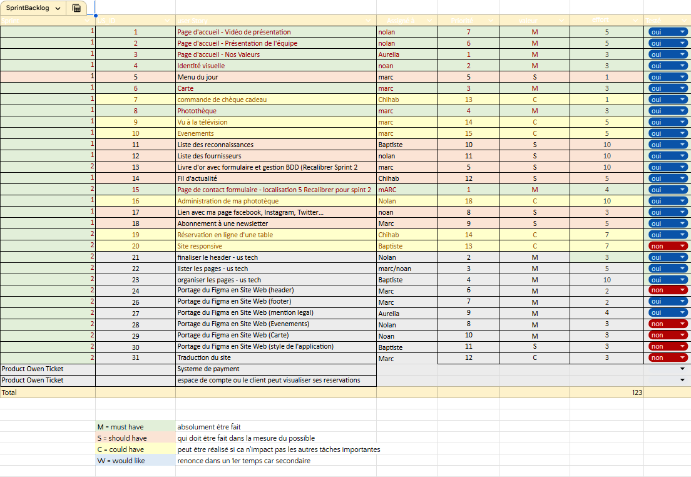
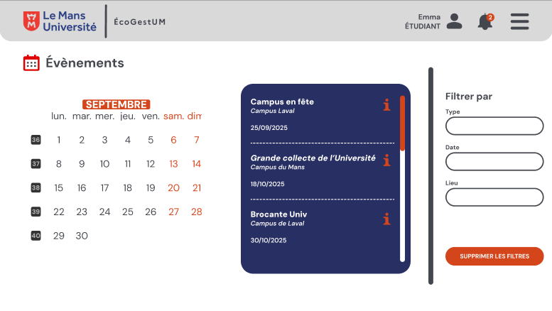
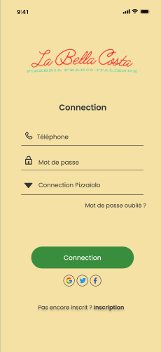
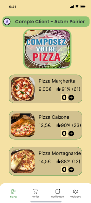
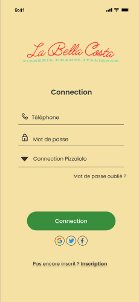
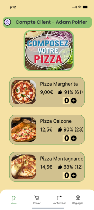
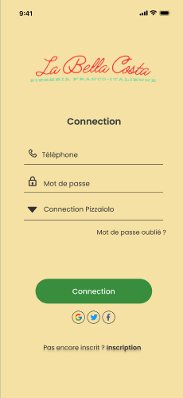
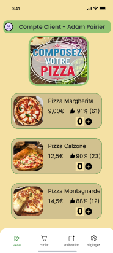

Compétence 1 : Réaliser un développement d'application
Niveau 2 : Partir des exigences et aller jusqu'à une application complète
| AC | Non Acquis | En cours d'Acquisition | Acquis |
|---|---|---|---|
| AC 1 : Élaborer et implémenter les spécifications fonctionnelles et non fonctionnelles | • Confusion entre interface et règle métier. • Incapacité à identifier les acteurs. • Ignore les contraintes techniques (OS). |
• Liste les fonctions sans aucune priorité. • Oublie les cas limites d'utilisation. • Absence de critères d'acceptation clairs. |
• Rédige des User Stories exhaustives. • Formalise les contraintes chiffrées. • Dossier validé formellement par le client. |
| AC 2 : Appliquer des principes d'accessibilité et d'ergonomie | • Choix visuels rendant le texte illisible. • Navigation bloquante ou impasses. • Absence de validation des formulaires. |
• Design incohérent entre les pages. • Interface non responsive (mobile). • Messages d'erreur purement techniques. |
• Charte graphique et standards accessibilité. • Parcours utilisateur fluide (UX). • Gestion intuitive des retours (feedbacks). |
| AC 3 : Adopter de bonnes pratiques de conception et de programmation | • Code monolithique (un seul fichier). • Nommage des variables non significatif. • Absence de gestion de version (Git). |
• Utilise des objets avec un fort couplage. • Commits Git rares ou messages flous. • Documentation non normalisée. |
• Architecture modulaire (SOLID, MVC). • Usage de Git Flow et commits atomiques. • Code auto-documenté et Javadoc complète. |
| AC 4 : Vérifier et valider la qualité de l'application par les tests | • Le test se limite à la compilation. • Ignore la notion de bug reproductible. • Teste uniquement le chemin idéal. |
• Tests unitaires sur les cas simples. • Pas de simulation (Mocks) de base de données. • Dépendance excessive aux tests manuels. |
• Stratégie de tests couvrant 70% du métier. • Automatise les tests d'intégration. • Rapport de tests prouvant la robustesse. |
📁 Preuves
Backlog et User Stories (AC1)
Backlog produit complet listant toutes les fonctionnalités sous forme de User Stories, avec priorisation et critères d'acceptation.

Maquettes UI/UX Responsive (AC2)
Maquettes Figma montrant l'interface utilisateur responsive, adaptée aussi bien au desktop qu'au mobile, avec une attention particulière à l'ergonomie.


 





Architecture MVC (AC3)
Arborescence du projet suivant le pattern Modèle-Vue-Contrôleur (MVC), garantissant une séparation claire des responsabilités et une maintenabilité optimale.